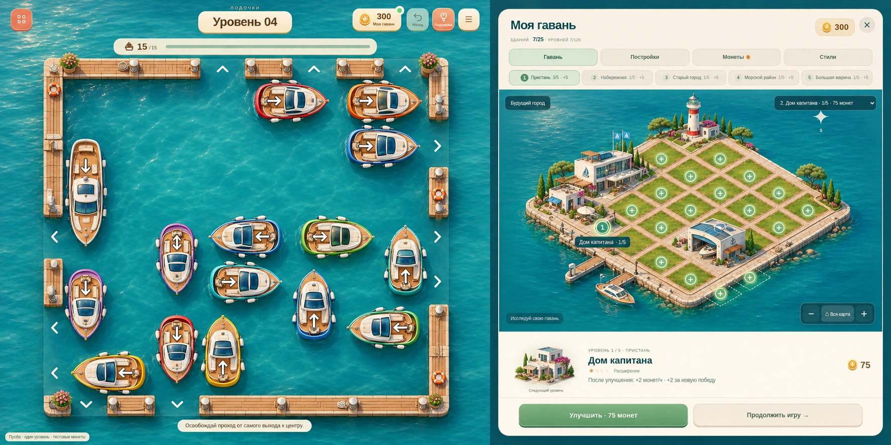
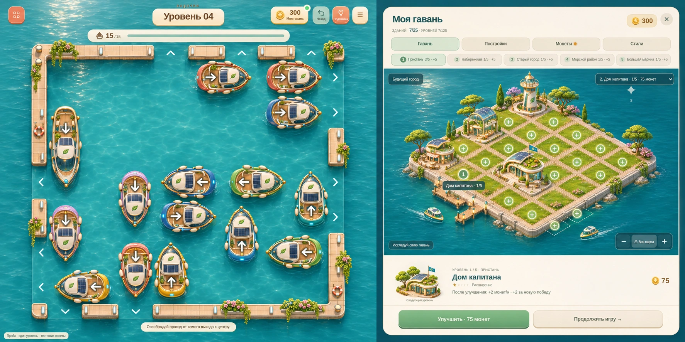
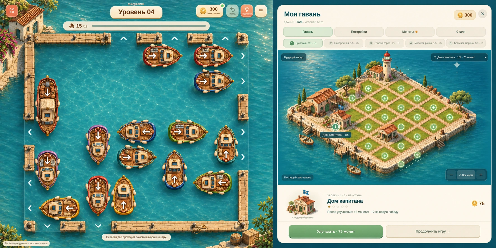

Лодочки — четыре эпохи для согласования2. Современная марина
Макет эпохи для согласованияСовременные катера, светлые фасады, стекло и аккуратные причалы. Гавань и игровое поле оформлены в одном времени.
Скачать это изображение
3. Порт будущего
Макет эпохи для согласованияДружелюбное экологичное будущее: электрические лодки, солнечные панели, плавные формы зданий и зелёные крыши.
Скачать это изображение
4. Историческая гавань
Макет эпохи для согласованияДеревянные суда, канаты, каменные причалы и старые портовые мастерские. Исторический торговый порт без военной тематики.
Скачать это изображение